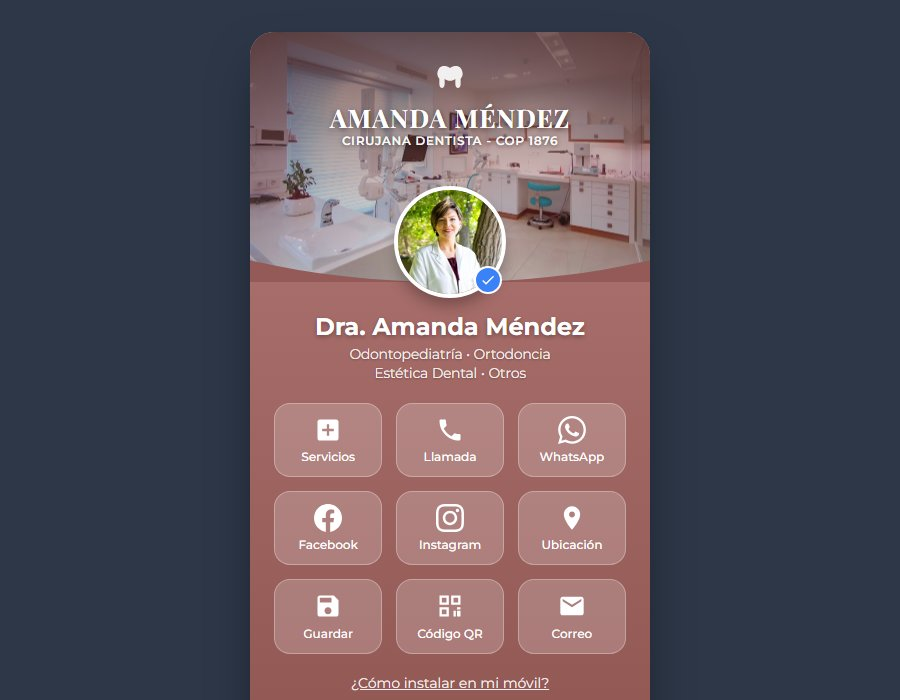

Dra. Amanda Méndez — Cirugía dental
Salud · Cirugía dental · Tarjetas digitales
Desafío: muchos pacientes llegaban a consulta sin saber qué procedimientos realiza realmente la especialista, y el personal repetía por teléfono las mismas indicaciones de preparación antes y después de cada cirugía.
Solución: tarjeta digital con la descripción de cada procedimiento, las indicaciones previas y posteriores a la cirugía, galería de casos, agenda de valoración y un código QR en la sala de espera que abre directamente las recomendaciones de cuidado.
Ver proyecto en vivo